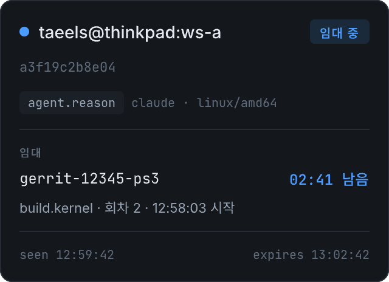
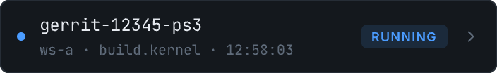
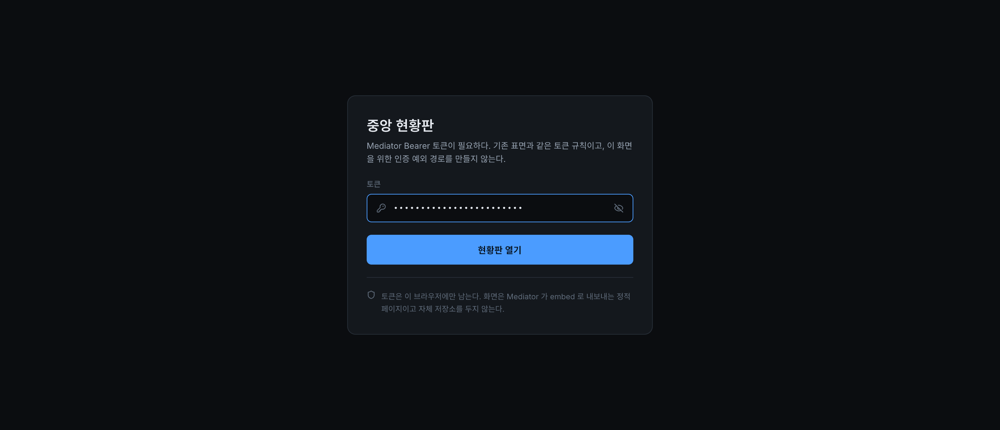
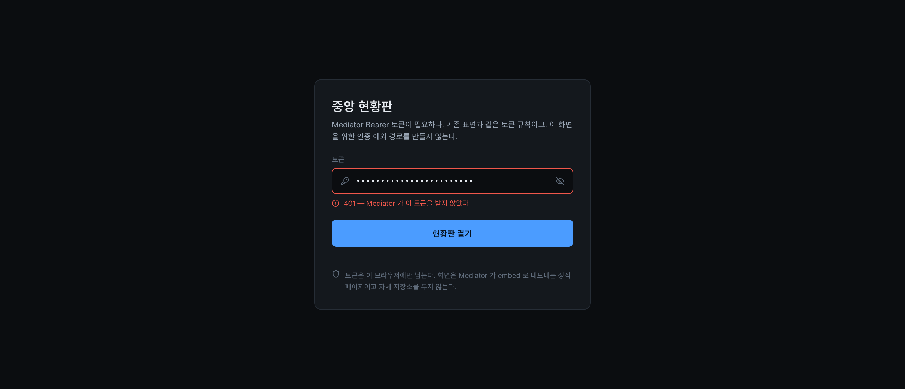
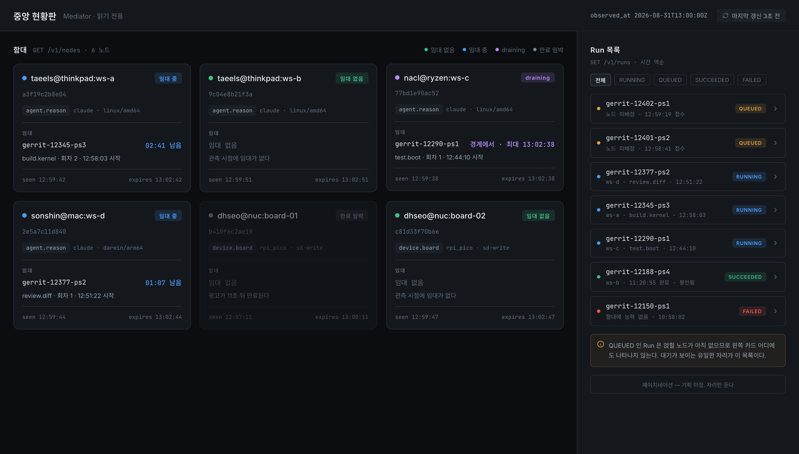
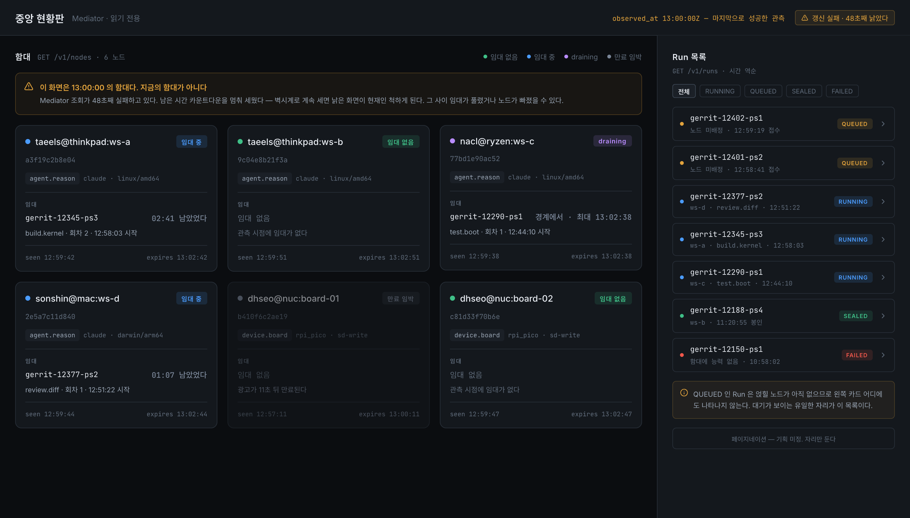
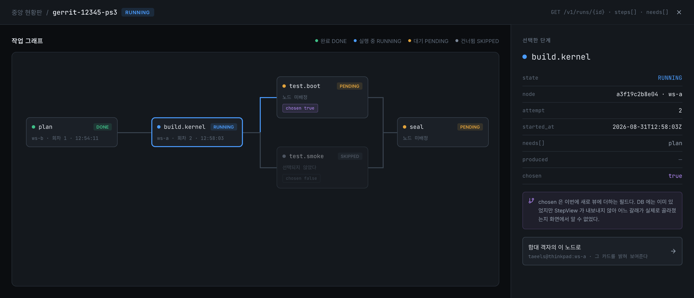
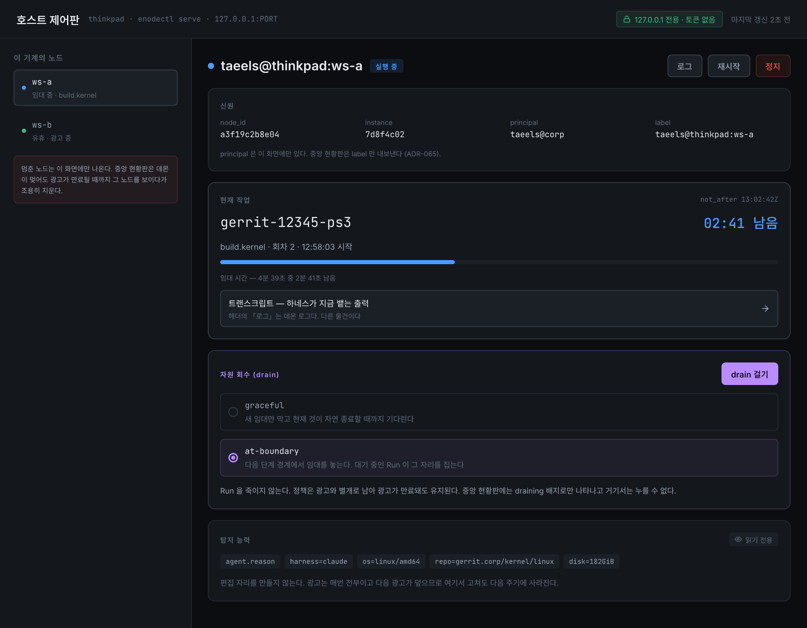
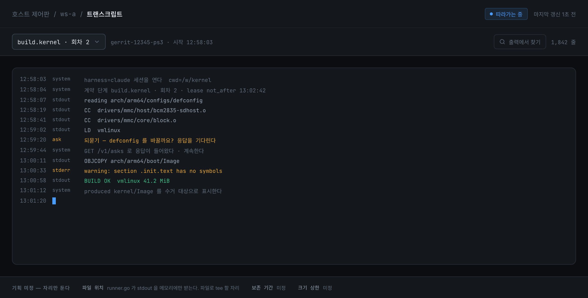
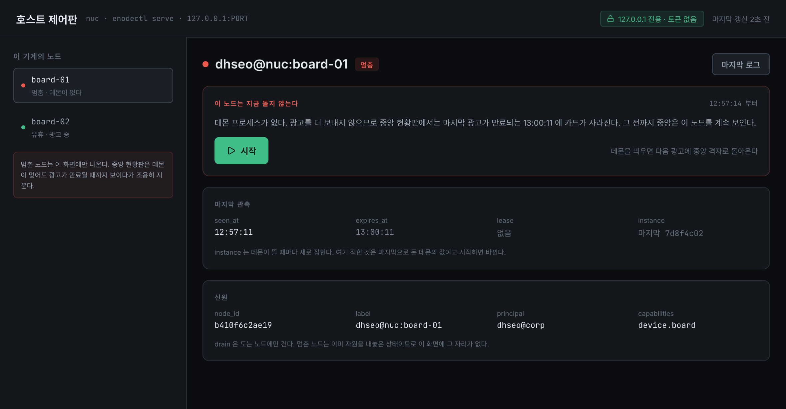

함대 전체를 보는 중앙 현황판과 자기 기계를 통제하는 호스트 제어판, 두 표면의 화면 여덟 장이다. 기획을 화면으로 옮긴 초안이고 구현 사양이 아니다.
requirements/enode-features.md §3.1.1 · §3.1.2requirements/constraints.mdenode-design 의 ADR-065 · ADR-060 · 값 requirements/decisions.mddesign/README.md · 원본 design/enode-ux.pen
두 표면이 같은 노드를 봐도 보이는 것이 다르다. 그 차이가 이 초안의 뼈대이므로 규칙으로 적는다.
| 구분 | 중앙 현황판 | 호스트 제어판 |
|---|---|---|
| 자료 출처 | GET /v1/nodes · GET /v1/runs |
로컬 프로세스 + Mediator 조회 |
| 신원 필드 | label 만. principal 을 내지 않는다 |
node_id · label · principal · instance |
| drain | 배지만 보인다. 누를 수 없다 | 토글이 있다. graceful · at-boundary |
| 멈춘 노드 | 안 보인다. 광고 만료까지 남았다가 사라진다 | 즉시 보인다. start 로 띄운다 |
| 바인딩 | Mediator 기존 포트. Bearer 토큰 | 127.0.0.1 기본. LAN 은 명시적 플래그와 토큰 |
principal 을 중앙에서 뺀 근거는 ADR-065 다.
「principal 은 따로 내지 않는다. 사람이 읽는 식별은 이미 label 에 있다」라고
적혀 있다. drain 을 호스트에만 둔 근거는 소유 증명이다. 중앙 표면에는 이 노드가
당신 것인지 판정할 수단이 없어서, 함대 토큰만 가진 사람이 남의 노드를 비울 수 있게
된다. 그 기계에 접속한 것 자체가 소유의 증거이므로 조작은 호스트에만 둔다.
노드 하나를 나르는 원자 단위다. 상태 다섯을 태운다 —
유휴 · 임대 중 · draining · 만료 임박 · 멈춤. 마지막 하나는 중앙에
나오지 않는다. 바닥에 seen 과 expires 를 늘 얹어서, 보고 있는
것이 관측 시각의 사실이지 지금의 사실이 아님을 드러낸다.

Run 목록의 한 줄이다. 상태 배지는 API 값을 원문 그대로 쓴다 —
RUNNING · QUEUED · SUCCEEDED · FAILED.
한글은 범례가 맡는다.

Mediator Bearer 토큰을 한 번 받는다. 이 화면을 위한 인증 예외 경로를 만들지 않는다 — 기존 표면과 같은 토큰 규칙이다. 화면은 Mediator 가 embed 로 내보내는 정적 페이지이므로 자체 저장소를 두지 않고, 토큰은 브라우저에만 남는다.

Mediator 가 토큰을 받지 않은 상태다. 무엇이 틀렸는지를 상태 코드와 함께 말한다.

노드마다 카드 하나를 격자로 놓고, 오른쪽에 Run 목록을 붙였다. 둘을 한 화면에 둔 이유가 있다. 대기 중인 Run 은 얹힐 노드가 아직 없어서 어느 카드에도 나타나지 않는다. 카드만 보면 「보드가 다 찼고 둘이 기다린다」가 안 읽히므로, Run 목록이 대기가 보이는 유일한 자리가 된다.
카드 여섯에 상태 넷을 태웠다. 임대 중 둘, 임대 없음 둘, draining 하나, 그리고 만료 임박 하나를 흐려 놓았다.

02:41 남음 과 expiresQUEUED 두 행free 도 없다. 상태 필터는 Run 목록에만 있다ws-c 의 draining 배지에는 아직
자료 출처가 없다. ADR-065 가 정한 GET /v1/nodes 응답에
draining 여부를 실을 필드가 없기 때문이다. 그 필드를 더하도록 ADR 을 개정하는
방향으로 정했고, 개정이 정본에 들어가기 전까지 이 배지는 결정이 아니라 기획에만
근거한다.이 초안의 주장이 「시간에 정직하다」인데, 가장 정직해야 할 순간이 바로 폴링 실패다. 그대로 두면 남은 시간 카운트다운이 벽시계로 계속 흘러서 낡은 화면이 현재인 척하게 된다. 그래서 갱신이 임계를 넘겨 실패하면 카운트다운을 멈춰 세우고, 화면이 어느 시각의 함대인지를 배너로 말한다.

이미 있는 자료로 그린다. GET /v1/runs/{id} 의
steps[] 와 needs[] 가 그대로 간선이고, 노드는 단계, 색은
상태, 어느 기계에 얹혔는지는 node 다. 새로 더하는 것은
chosen 하나뿐이다.
chosen 이 없으면 test.smoke 가 왜
건너뛰어졌는지 화면에서 알 수 없다. 데이터베이스에는 있었지만
StepView 가 내보내지 않아 갈래의 결과가 보이지 않던 자리다.

조작이 있는 화면이다. 지배 영역은 「현재 작업」이고 주 동작은 drain 이다. 소유자가 자기 자원을 돌려받는 것이 이 표면의 존재 이유이므로, drain 절만 테두리로 무게를 올리고 프로세스 제어는 헤더 오른쪽으로 낮췄다.
탐지 능력은 읽기 전용이다. 편집 자리를 만들지 않는다 — 광고는 매번 전부이고 다음 광고가 덮으므로 화면에서 고쳐도 다음 주기에 사라진다.

127.0.0.1 전용 칩label 만 낸다하네스가 지금 뱉는 출력을 따라간다. 헤더의 「로그」와 다른 물건이다 — 그쪽은 데몬 로그다. 되묻기가 한 줄로 섞여 있어서 이것이 단순 출력이 아님을 드러낸다.
바닥의 셋은 기획에서 아직 미정이라 값 없이 자리로만 뒀다. 특히 파일 위치는 코드가 지금 표준 출력을 메모리 버퍼에만 받고 있어서, 파일로 tee 하는 일이 선행되어야 한다.

데몬이 없는 노드다. 여기서는 주 동작이 start 로 바뀐다. drain 절이 없는 이유도 함께 적어 뒀다 — 멈춘 노드는 이미 자원을 내놓은 상태다.
이 화면이 중앙과 갈리는 자리를 한 문장으로 말한다. 광고를 더 보내지 않으므로 중앙 현황판에서는 마지막 광고가 만료되는 시각에 카드가 사라지고, 그 전까지 중앙은 이 노드를 계속 보인다.

중앙 격자가 보는 것은 살아 있음이 아니라 광고의 잔존이다.
ADR-065 가 「만료되지 않은 광고만 낸다. 죽었지만 아직 만료되지 않은 노드는
잠깐 남을 수 있다」라고 못 박았다. 아래 두 장은 같은 노드
dhseo@nuc:board-01 을 같은 순간에 두 표면에서 본 것이다.
기획에서 아직 미정인 것은 자리만 남기고 값을 그리지 않았다. 오늘의 상태를 화면에 제약으로 박지 않기 위해서다.
| 폴링 간격 | 숫자 대신 「마지막 갱신 N초 전」으로 대신한다 |
| 포트 | 호스트 제어판만 해당. 중앙은 Mediator 기존 포트에 얹힌다 |
GET /v1/runs 응답 | 목록 열 구성이 여기 딸린다. 최소 열만 그렸다 |
| 페이지네이션 | Run 목록 하단에 빈 자리로 둔다 |
| 트랜스크립트 | 파일 위치 · 보존 기간 · 크기 상한 셋 다 미정 |
| 만료 임박의 임계값 | 카드가 몇 초 전부터 흐려지는가. 어느 문서에도 없다 |
| 갱신 실패의 임계값 | 몇 번 실패하면 카운트다운을 멈추는가 |
ADR-065 에 노드의 drain
상태를 싣는 개정이다. 그것이 정본에 들어가기 전까지 S1 의 draining 배지는 근거가
기획에만 있다. 결정이 정본에 없는 채로 화면이 앞서가면 구현이 두 갈래로 갈린다.